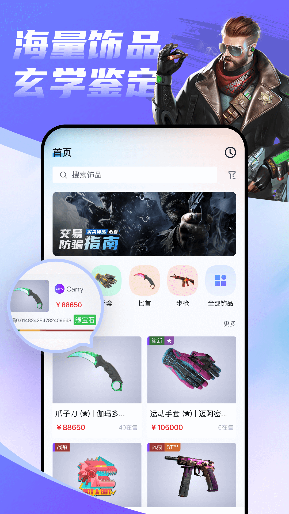

Steam 饰品交易新选手 Carry 深度测评：免压求购能带来什么实际优势
对比老牌饰品交易平台，Carry 在求购机制、成交方式和 Steam 对接上的差异化到底值不值得换过去，这篇文章给你算清楚。
Steam 饰品交易这个赛道，Buff、IGXE、C5、悠悠有品这些名字已经占了用户心智好些年。新选手进来想分一杯羹，要么在价格战里拼杀，要么就得在产品体验上找一个确实戳人的切口。Carry 选的是后者，而且切口不算小——它从一开始就把「求购免压」和「多通道成交」这两个点打在自家宣传的最显眼位置，去它的官网看一眼就明白。这两个点放在一起看，其实是一整套针对老牌平台固有痛点的产品设计思路，不是孤立的营销话术。
同类格局里的定位
先拉个坐标系。国内 Steam 饰品交易用户的选择大致分三层：最上面是 Buff，它的流量深度和价格透明度在头部是碾压级的，但手续费高、操作逻辑厚重，老玩家熟门熟路但新手上手成本不低；中间层是 C5、IGXE 这类，价格和手续费各有侧重，在某几个品类或区域有自己的基本盘；再往下是一些走垂直路线或新入场的工具，想从某一个具体环节做差异化突破。
Carry 就站在这第三层，但它瞄的不是垂直品类，而是交易流程里两个所有用户都会碰到的通用痛点：求购时资金被冻结，以及只有挂单这一条被动成交路径。这两个问题在老牌平台上不是没被吐槽过，而是产品方因为各种原因（风控压力、存量架构改造成本）始终没能彻底解决。Carry 作为从零开始的新项目，没有历史包袱，直接在架构层面做了不同的设计。
它的三个差异化硬点
余额求购不冻结——资金效率的本质差异
这是 Carry 最核心的产品主张，也是最容易被忽略其真正价值的一个点。
传统模式下，你挂一张求购单，平台会把对应金额从你账户里冻住——直到求购被成交、被取消、或过期失效之前，这笔钱你动不了。问题在于，一个真正活跃的玩家不可能只挂一张求购。想同时蹲一件手套和一把刀的好价，余额就得同时被两笔冻结；中间突然刷到一件不在求购清单里的好价饰品，还得先把旧求购撤掉、等解冻、再下单。资金的实际利用率远低于账户表面数字。
Carry 的做法是：求购挂出去，钱还在自己账上正常可用。只有真有人供应、订单成立的那一瞬间，对应金额才会被划走。这听上去像是「先上车后补票」，但它改变的是整个求购策略的上限——你可以同时挂十张不同饰品的求购，余额只需要覆盖实际发生成交的那几张，而不是全部求购金额的总和。对于习惯用求购蹲低价的玩家，这一项就能带来实打实的资金周转效率提升。
四种成交方式并行——撮合效率不打折
老牌平台的交易路径通常是：卖家挂单 → 买家浏览 → 点击购买 → 成交。求购功能大多是后加的、处于边缘位置的补充，很多用户甚至不知道自己常用的平台还有求购入口。
Carry 把四种成交方式摆在了同等重要的位置：挂单出售、买家求购、双向还价、卖家供应求购。卖家库存里有匹配求购单的饰品，一键供应就能即时成交，不用等买家慢慢挑、也不用挂单等行情；买家看中一件挂单但价格谈不拢，可以发起还价，对方接受就按新价成交，拒绝就继续僵持——中间多了一道博弈的弹性，而不是只有「按价买或放弃」两个选项。
这种多通道并行的好处是：不管你是急出还是蹲价、是主动还是被动，总有一条路径适合你。老牌平台不是做不到这个，而是产品重心长期偏向挂单撮合，其他方式的入口和引导都做得不够显眼。
直接对接 Steam 交易报价——链路短一步
所有第三方饰品交易平台本质上都是撮合中间商，真正的所有权变更永远发生在 Steam 官方的交易报价系统里。但不少平台在中间加了自己的一套报价生成和交付逻辑，有时候会让买家在 Steam 端收到一份看起来不太熟悉的报价界面，增加一点点不必要的确认成本。
Carry 的做法是把 Steam 账号绑定做成进场资格，买卖双方的最终交付直接走 Steam 原生的交易报价链路。好处是用户对交付流程有熟悉感，不需要额外学习一套半透明的中间流程；代价也很明显——Steam 侧的任何限制（交易冷却、令牌未开导致的暂挂）都会直接传导到应用侧，平台在中间能兜住的空间有限。这是一个典型的「取短链还是取可控性」的权衡，Carry 选了前者。

它的取舍——为这些优势付出的代价
天下没有免费的午餐。免压求购的背后，是平台在风控上的压力转移——如果有人恶意挂求购、成交后余额不足怎么办？Carry 没在公开文档里展开这个机制，后来翻了Carry文档也没找到更细的说明，但从产品设计上能看出一些端倪：多张求购同时触发时的成交顺位规则、重仓求购前的资金确认提示，这些都是在给免压机制补安全垫。对用户来说，这意味着在享受资金自由度的同时，需要自己更留意账户余额的实际可用性。
平台尚新也是绕不开的事实。用户积累的深度不够，直接导致两个后果：一是冷门饰品品类的市场厚度可能不如老牌平台，想找某些小众手套或贴纸的现货供应，Carry 上的选择可能没那么多；二是卖家侧的挂单数量和价格竞争力，在一些热门品类上还需要时间追上来。这不是产品设计能解决的问题，得靠时间沉淀。
还有一个用户体验层面的小代价：目前公开渠道只有安卓安装包，走官方下载拿到的是网盘分享链接，转存后再下载，不经过应用商店分发。这对习惯了一键安装的用户来说是多出来的一两个步骤，虽然不算复杂，但也是一个客观的门槛。iOS 用户目前还没有可用版本。
选购结论
什么样的人适合把 Carry 加进自己的交易工具盒？
如果你是重度求购用户——习惯同时蹲好几件饰品的低价、余额经常大部分被冻住、觉得资金周转效率不够——那 Carry 几乎是为你量身定做的。免压机制带来的实际资金利用率提升，是老牌平台在现有架构下很难追上的硬优势。
如果你是经常需要灵活切换成交方式的卖家——有时候急出想直接供应高价求购单，有时候不急就挂单等行情——那多通道并行的设计能让你的库存处置效率更高，不用被单一的挂单节奏绑住。
但如果你主要做热门品类的现货买卖、看重的是市场厚度和最低价竞争，那 Buff 或 C5 这类老牌平台在价格透明度和挂单规模上的优势暂时还是 Carry 比不了的。新平台的品类覆盖和价格体系需要时间沉淀，急着找最低价的话，老牌选手仍然是更稳的选择。
总结下来就是：Carry 不一定能完全替代你手头已有的交易平台，但它确实补上了一个被长期忽略的用户痛点。如果你还没试过在免压机制下挂求购、同时保留机动资金刷好价的那种自由度，值得花时间注册一个试试。它未必是你最常用的那一个，但很可能是让你觉得「原来还能这么用」的那一个。对了，这套应用的资料在GitHub、Gitee、GitCode三个仓库都能找到，换着访问也行。